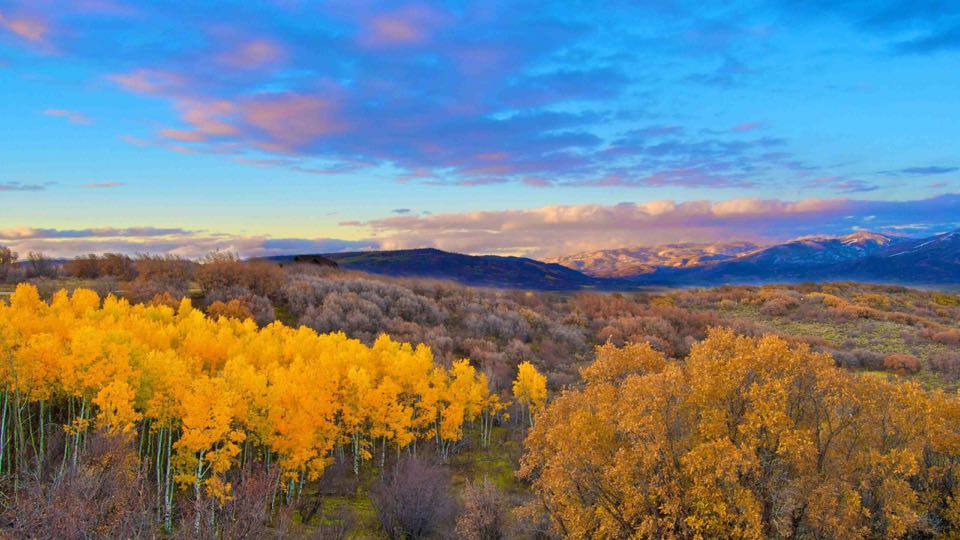

$8,250,0003 Bd · 4.5 Ba · 2,942 SF33 9th Street, Steamboat SpringsOffered by Derek Hodson · The Steamboat Group
Keep Exploring
More corners of the valley.

Elk River Area
North of town along the Elk River — ranch land, acreage, and valley-floor properties with room to breathe and big-sky views.
Explore Elk River Area →
Fish Creek Falls Area
Established east-side neighborhoods near the falls trailhead — quick access to town on one side and the backcountry on the other.
Explore Fish Creek Falls Area →
Hayden
West down US 40 — small-town character, the county airport, wide valley views, and some of the area's more attainable prices.
Explore Hayden →